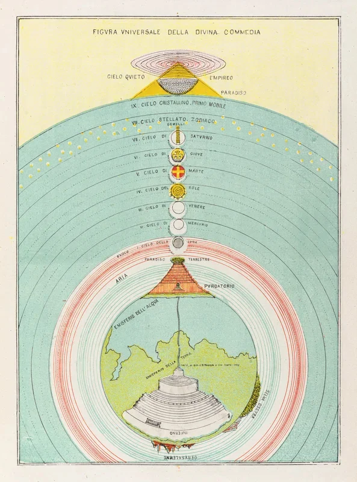
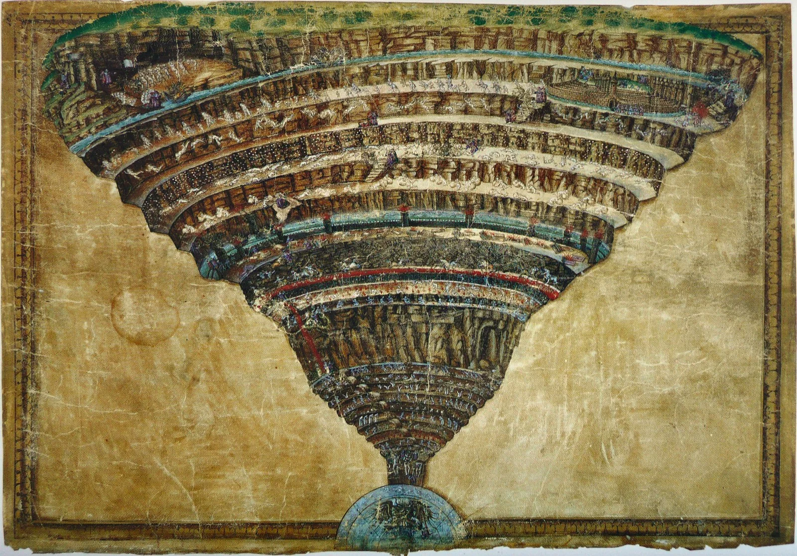

In 1855, a Roman aristocrat published a set of lithographs that looked nothing like art. No angels, no damned souls clawing at rock, no dramatic chiaroscuro. The plates were technical drawings: clean lines, precise labels, cross-sections rendered with the care of a civil engineer. They mapped Hell.
Michelangelo Caetani, Duke of Sermoneta, was not an engineer. He was a politician, a diplomat, and (briefly) the minister of foreign affairs for the Papal States. But Dante had taken hold of him early, and the grip never loosened. From the 1840s until his death in 1882, Caetani returned again and again to a single problem: what did Dante's afterlife actually look like, if you took the poet at his word?
The question sounds eccentric. It was. Caetani treated the Commedia not as allegory or literature but as a set of spatial coordinates. Every canto contained measurements, angles, distances. If Dante said the seventh circle lay a certain depth below the sixth, Caetani drew it to scale. If Virgil described a ridge wide enough for three men abreast, Caetani calculated the width in braccia.
The duke who surveyed Hell
His first publication, La materia della Divina Commedia di Dante Alighieri dichiarata in VI tavole, appeared in 1855 as a portfolio of six large plates. The Inferno received the most attention: a vertical cross-section showing the funnel of nine concentric circles narrowing to the point where Lucifer sits frozen in ice at the centre of the Earth. The drawing is beautiful in the way blueprints are beautiful. It makes no appeal to emotion. It simply describes.
Caetani expanded the work in 1872, adding colour lithographs that covered Purgatory and Paradise as well. The full set amounts to a comprehensive atlas of the afterlife, rendered in the visual language of nineteenth-century geology and architecture. The plates fold out to considerable size. They were meant for study tables, not gallery walls.

He was not the first to attempt this. The tradition of Dante cartography stretches back to the fifteenth century. Antonio Manetti, the Florentine mathematician and architect, worked out the dimensions of the Inferno around 1480, calculating the funnel's depth, the circumference of each circle, and the precise location of the entrance relative to Jerusalem. Alessandro Vellutello published a competing set of measurements in 1544, disagreeing with Manetti on nearly every figure. The two models generated a scholarly quarrel that lasted centuries.
Galileo Galilei himself weighed in. In 1588, as a young lecturer at the Florentine Academy, he delivered two lectures defending Manetti's measurements against Vellutello's. The lectures are, among other things, an exercise in applied geometry: Galileo calculated the thickness of the Inferno's roof (the distance from the Earth's surface to the first circle) and concluded it was proportionally thinner than the dome of the Florence cathedral. The comparison tells you something about how seriously Renaissance thinkers took the question.
"Nel mezzo del cammin di nostra vita, mi ritrovai per una selva oscura."
Dante, Inferno, Canto I
Caetani knew this history well. He cited Manetti, corrected Vellutello, and quietly ignored Galileo's contributions (perhaps because Galileo had sided with Manetti, whose figures Caetani also preferred). But where earlier mappers had relied on text and tables, Caetani drew. His contribution was visual. He turned centuries of numerical argument into something you could see at a glance.
Reading as engineering
The difference between illustrating Dante and diagramming Dante is worth pausing over. Gustave Doré's famous engravings of the Commedia appeared in 1861, six years after Caetani's first portfolio. Doré gave readers towering cliffs, swirling darkness, bodies twisted in agony. His images are narrative. They show what it felt like to be in Hell.
Caetani's plates show where Hell is. They answer a different kind of question entirely. How far down is the eighth circle? What is the relationship between the terraces of Purgatory and the spheres of Paradise? How does the entire system fit together as a structure? His work is closer to an architect's section drawing than to any painting.

This matters because it reveals something about how Caetani read. He read the Commedia the way an engineer reads a specification: as instructions for building something. The poem told him what to construct; his job was to construct it faithfully. When the text was ambiguous, he made choices, but he always documented his reasoning. The plates include annotations explaining which tercets he relied on and where he departed from earlier interpreters.
There is something touching about this. Caetani spent thirty years on a project that most of his contemporaries considered a curiosity. Italian literary culture in the Risorgimento was busy turning Dante into a nationalist symbol; Caetani was measuring his floorplan. The duke attended to the poem's geometry while others attended to its politics.
His lithographs survive in a handful of research libraries. Cornell holds a fine set. The colours remain vivid: soft blues for the celestial spheres, warm ochres for the terrestrial cross-sections, deep reds where the rock gives way to fire. They are, by any standard, handsome objects. But their beauty is incidental. Caetani would have been satisfied if they were merely accurate.
Whether they are accurate is, of course, unanswerable. The Commedia describes an imaginary place. You cannot survey it. But Caetani's work insists on a particular way of taking fiction seriously, one that treats a poet's words as binding commitments. If Dante says the pit narrows, it narrows by a calculable degree. If the mountain of Purgatory rises, it rises to a measurable height. The poem becomes a contract, and the cartographer holds the poet to its terms.
That contract still holds. Every few years, someone publishes a new attempt to map the Commedia, using digital tools Caetani could not have imagined. The impulse is the same. Some readers want to know how a story feels. Others want to know where it is.